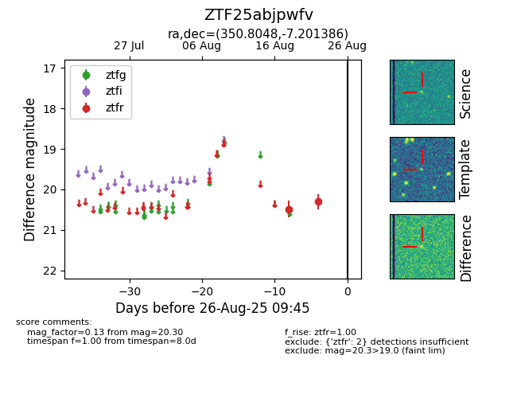

Target ZTF25abjpwfv at 2025-08-26 09:45, see:
FINK: fink-portal.org/ZTF25abjpwfv
Lasair: lasair-ztf.lsst.ac.uk/objects/ZTF25abjpwfv
ALeRCE: alerce.online/object/ZTF25abjpwfv
alt names
ZTF25abjpwfv (ztf,fink)
coordinates:
equatorial (ra, dec) = (350.8048,-7.20139)
galactic (l, b) = (72.4893,-61.10633)
photometry
last ztfr=20.30
2 ztfr detections
